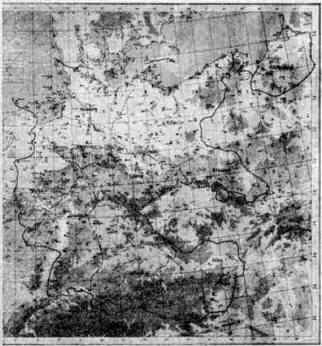
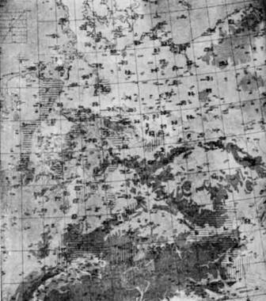
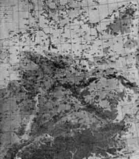
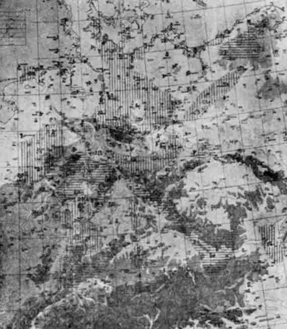
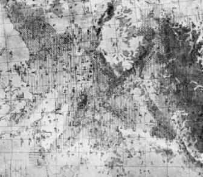

Manual del Vuelo a Vela
Wolf Hirth
1942
Carta representativa de las posibilidades del vuelo a vela en Alemania
por
el DOCTOR HÖHNDORF
(Aun
cuando parezca a primera vista que este estudio no tendrá interés para otro país que no
sea el representado en la carta, no es así realmente, porque en este estudio se
establecen criterios que son completamente generales y si los resultados sólo son
aplicables a Alemania, el método para llegar a esos resultados es aplicable a cualquier
país.
Respecto
a España, véanse las notas de las páginas 56 y 244, en donde se trata de varios
aspectos de la meteorología de nuestro país en relación con el vuelo sin motor.
Se
añadirá ahora que la circunstancia de ser España un país con muchas cordilleras hará
que en el caso de las invasiones de aire lábil las crestas de las montañas actúen de
causa resolutiva de la labilidad y se originará fácilmente térmica de altura que, como
se ha explicado en este libro, es independiente del suelo y de la hora del día, por lo
que será muy probable que haya térmica nocturna importante.
Los estudios hechos por el que esto escribe, en Sabadell, con motivo de la instalación de
un aeródromo, pusieron de manifiesto la existencia de niveles de intensa turbulencia que
coincidían con la altura de las crestas, lo que abona la suposición anteriormente hecha.
De
todos modos, la simple consideración del contraste entre el clima solar de la Península,
es decir, el debido a su latitud, con su clima real debido a las masas de aire que la
recorren, hace presumibles unas condiciones excepcionales para el vuelo con apoyo térmico
.- N. del T.)
Desde que se
consiguió que el vuelo sin motor pudiera prescindir de las montañas y que se pudiese
llegar a un objetivo fijado apoyándose en ascendencias térmicas con nubes o sin ellas,
existe el deseo de presentar un estudio de conjunto sobre las condiciones para el vuelo a
vela de cada una de las comarcas del país.
Para
hacer un vuelo a vela lo que interesa exclusivamente es el estado de la atmósfera en el
lugar y altura a la que se encuentra el avión en cada momento; pero para hacer un plan de
vuelo es importante saber el grado de probabilidad de presentación de posibilidades de
vuelo a vela en cada comarca. Un terreno con la mejor ascendencia de nada sirve si se
llega a él con poca altura, o si el aire caliente acaba de iniciar su desprendimiento del
suelo; y, al contrario, un piloto hablará bien de un terreno cuando al pasar sobre él,
en un vuelo de distancia, ha podido aprovechar completamente la ascendencia que en él
había, aun cuando en ese terreno sea un fenómeno raro la existencia de aire ascendente.
El piloto de velero ha de ejecutar, en lo que se refiere a la meteorología, una
navegación que pudiera llamarse de cabotaje ; una carta del tiempo que representa el
,« estado medio », aunque sea muy detallada, será superflua si no perjudicial, puesto
que las variaciones del estado instantáneo respecto al estado medio, en una comarca
determinada de poca extensión, puede ser muy grande, y en cambio, para una comarca
extensa serán pequeñas, puesto que en ella puede haber cierta compensación.
Aparece
pues, desde luego, la cuestión de qué es lo que puede designarse como estado muy bueno,
bueno, suficiente, escaso o insuficiente, respecto a la posibilidad de volar a vela.
Seguramente que algunas situaciones meteorológicas pueden incluirse en uno u otro de los
grupos representados por esas designaciones, según que se pueda contar o no con ejecutar
vuelo sin visibilidad. También, en muchos casos, habrá de apreciarse la cuestión de
modo diferente, según que se trate de un vuelo de duración sobre una zona limitada de
terreno o que, por el contrario, exista la libertad de escoger el itinerario del vuelo. En
el caso de viento fuerte, podrá fracasar un vuelo solamente por las condiciones de
posibilidad de envolar en un lugar determinado, mientras que para un aparato que haya
partido desde otro lugar puede haber en aquél excelentes condiciones de vuelo a vela. El
criterio para la confección de una carta del género de la que se trata se basa en la
existencia de movimiento vertical del aire en una altura de 600 a 1000 m. sobre el suelo,
que se reducirá hasta 300 a 400 sobre la cúspide de las montañas, cuando las haya en el
terreno, y en apreciar la calidad de ese movimiento vertical del siguiente modo:
Muy
bueno, cuando se presentan numerosas ascendencias extensas y enérgicas,
independientemente de la existencia de nubes.
Bueno,
cuando las ascendencias de las condiciones anteriores son menos numerosas o de menos
intensidad.
Suficiente
si siendo peores las circunstancias se pueden hacer 50 Km. de vuelo sin tener que recurrir
al vuelo sin visibilidad para atravesar las nubes.
Escaso,
cuando hay momentos en los que se puede hacer la prueba para el título C sin tener que
emplear el vuelo sin visibilidad.
Insuficiente,
cuando no existen posibilidades de vuelo a vela.

Fig. 124. carta que contiene las estaciones de observación meteorológica que se han utilizado
Las
circunstancias que corresponden a un estado del tiempo, que para el vuelo a vela se puede
calificar de escaso o hasta insuficiente, son las de haber una estratificación estable en
el caso de posibles ascendencias orográficas; los movimientos verticales en tiempo de
lluvia a chaparrones con más de 3/4 de cielo cubierto; capa cerrada de estrato-cúmulos
con altura inferior a 600 m. sobre el terreno, altura que se puede deducir de los partes
meteorológicos Esta afirmación que, a primera vista, podría parecer arbitraria, está
fundada en las condiciones que debe presentar el tiempo para que se puedan realizar los
vuelos libres en la dirección del viento sin tener que recurrir al vuelo sin visibilidad.
La lluvia ordinaria continua y la niebla imposibilitan naturalmente el vuelo a vela, y con
la lluvia de chaparrones el juicio depende del grado de nubosidad. Una capa cerrada de
nubes. altas impidiendo la radiación solar hace que haya que calificar el estado del
tiempo de escaso o insuficiente.
La
segunda cuestión respecto al instante o momento que ha de servir de base para formar el
juicio sobre el tiempo se resuelve por sí misma con arreglo a las condiciones fijadas
antes. Se puede disponer de los partes meteorológicos regulares del Servicio alemán de
Meteorología Aeronáutica, cuyas observaciones se realizan a las 7,30, 10,30, 13,30 horas
y aun otras más tarde. Para formar juicio, la primera observación de las citadas no es
apropiada en el otoño, puesto que a esa hora todavía perduran las influencias locales
debidas a la radiación emisiva nocturna; la tercera observación es ya muy tardía para
poder empezar un vuelo de distancia, puesto que es corto el tiempo disponible hasta la
puesta del sol. La observación intermedia es la que corresponde aproximadamente al
momento en que la radiación del sol empieza a producir los movimientos verticales
térmicos que se aprovechan en el vuelo a vela, si bien en terrenos favorables
empiezan un poco antes y en los desfavorables un poco después. Precisamente las
diferencias entre unas y otras localidades son más marcadas en ese momento del comienzo
del térmico.
Los
partes meteorológicos contienen los datos necesarios para nuestro objeto: clase e
intensidad de las precipitaciones, nubosidad total; clase de nubes existentes; nubosidad
parcial de las nubes más bajas y altura sobre el suelo de la capa inferior de nubes.
Desgraciadamente, no son los datos comunicados, en lo que se refiere a las clases de
nubes, suficientemente explícitos para nuestro objeto, aun no teniendo en cuenta qué
hay que admitir la posibilidad de errores en la observación. Sería preciso que se
conociese, además, para poder formar el criterio claro que sirviese para emitir juicio,
el momento de producirse los cúmulos, su espesor y estructura; si no hay cúmulos,
puede ser debido a: a) No haber radiación solar, sea porque las nubes altas han dado
sombra o la están dando, sea porque las inversiones inferiores, acompañadas o no de
niebla, no han desaparecido todavía. b) La
En cuanto
a la cuestión de posibilidades de vuelo a vela, hay que hacer constar, desde luego, que
no existe en Alemania una comarca respecto de la cual pueda decirse que es imposible volar
a vela, sea cualquiera la situación meteorológica que exista. Por otro lado, hay
situaciones de tiempo con las que es posible el vuelo a vela en todo el país. En cuanto a
las montañas, podrá ocurrir que en un vuelo libre sean relativamente desfavorables, si
se quiere volar precisamente en la dirección del viento reinante cuando esta dirección
obliga a volar por el lado de sotavento. En cuanto a las nubes, excluyendo el vuelo sin
visibilidad, podrá decirse que con ellas será posible un vuelo a vela de distancia
cuando su techo sea suficientemente alto para permitir llegar a bastante altura con la
ascendencia orográfica térmica. Los pantanos, prados, vegas y grandes lagos dan, en
general, poca ocasión para buenas ascendencias. Pero si una comarca entera está húmeda,
entonces siempre existen diferencias locales, de modo que no faltan movimientos
verticales, aunque su intensidad sea menor que en las comarcas secas, bastando
generalmente para el vuelo a vela; y cuanto mejores sean las circunstancias térmicas de
los alrededores, tanto más ancha es la zona marginal de la comarca húmeda con malas
condiciones de vuelo. El bosque Spree y el pantano Dachauer son malos, desde el punto de
vista del vuelo sin motor; pero en cambio las grandes zonas pantanosas a uno y otro lado
del Ems, excepto
las márgenes, parecen reunir condiciones aprovechables cuando no llueve.

Fig. 125.
Probabilidades de vuelo a vela en el caso de aire caliente continental
1. Comarcas con nota 2 o mejor. -2. Comarcas con nota 3 + o peor
N. del
T. -
Las notas son las
que
resultan de
cifrar,
por orden, la escala de clases
de
tiempo que figura en el
texto.
Con signo +
es por
exceso y con
signo
- por defecto.

Fig. 126. Posibilidades de vuelo a vela en el caso de aire caliente marítimo de procedencia subtropical1. Comarcas con nota 2 o mejor. 2. Comarcas con nota 3-4 o peor
3. Comarcas con nota 3+ a 3-
Para
planear un vuelo a vela de distancia es indispensable la carta meteorológica del día,
y tanto más necesario será contar con ella, cuanto más jóvenes sean las masas de aire
que de otras zonas de la Tierra lleguen a Alemania (En
meteorología, se da el calificativo de joven o viejo a un fenómeno cuando éste hace
poco que se ha formado o ha transcurrido ya una fracción grande del tiempo que dura su
evolución, es decir, que, como se ve, esos calificativos se aplican con el mismo
criterio que a las personas en cuanto a edad. - N. del T.).
Si las masas de aire son ya viejas, se habrán acomodado tanto más a las propiedades de
nuestro suelo cuanto mayor sea su antigüedad y entonces se habrán compensado las
diferencias debidas a las circunstancias de la radiación solar, que son las que, en
verano, dan lugar a buen tiempo de vuelo; por lo tanto, en estos casos, sobra una carta
del tiempo. En cambio, si las masas de aire son frescas, es de algún interés conocer
las circunstancias medias del tiempo.

Fig. 127. Probabilidades de vuelo a vela en el caso de aire marítimo de nuestras
latitudes
1. Comarcas Con nota 2-3 o mejor. 2 comarcas con nota 4 o peor.
3. Comarcas con nota desde 3- hasta 3.4

Fig. 128. Posibilidades de vuelo a vela en el caso de aire frío marítimo, de procedencia subártica1. Comarcas con nota 2-3 o mejor. 2. Comarcas con nota 4+ o peor.
3. Comarcas con notas desde 3- hasta 3-4
Los días
que quedaron utilizables fueron los siguientes:
a) Nueve
casos de aire caliente continental, con vientos de los cuadrantes del Este (Fig. 125).
b) Ocho
casos de aire caliente marítimo de origen subtropical con vientos del Sudoeste (Fig.
126).
c)
Trece
casos de aire marítimo de nuestras latitudes, con vientos de los cuadrantes del Oeste
(Fig. 127).
d) Dieciséis
casos de aire frío de origen marítimo de altas latitudes, con vientos de los cuadrantes
del Norte. (Fig. 128).
Las
observaciones con las que se contaba para el estudio eran las de once horas realizadas en
las estaciones señaladas con círculos negros en la figura 136. En el mes de julio
faltaron las observaciones de los sectores de Berlín y Hamburgo, y en algunos días
posteriores faltaron, además de ellas, las de los sectores de Viena y Hannover. Las
estaciones aisladas que faltaban en algunos avisos de los que eran radiados, se suplían
atribuyéndoles el tiempo de los alrededores.
Un examen
somero de las cifras que figuran en los mapas demuestra que las posibilidades de vuelo a
vela son tanto peores cuanto más frías son las masas de aire que han invadido el
país. Esto parece un poco sorprendente, puesto que se creería que, en el verano, el aire
frío habría de tener una estratificación lábil junto al suelo. Pero como las masas de
aire son húmedas, se forman siempre, y muy pronto, nubes potentes y bajas de tipo cúmulo
de las cuales, además, cae la lluvia frecuentemente y que, desde luego, cubren las
crestas de las montañas. Este aire se acumula delante de los Mittelgebirge y de los
Alpes y el aire caliente de la altura inicia su subida con formación de nubes a lo largo
de la superficie de ascendencia del frente caliente. Este fenómeno se hace más
sensible en la baja Baviera y en Austria. Las zonas de lluvia, a ambos lados del Oder
(Fig. 125), no parecen deberse simplemente a la casualidad, y así se explica que se
presenten en las situaciones meteorológicas que nos han servido de base para la
obtención de los valores medios hallados. Por otra parte, Alemania solamente recibe
aire frío de origen polar, que ha recorrido un trayecto corto antes de llegar a ella, con
los ciclones cuya trayectoria es relativamente meridional; tales depresiones con todo el
acompaña-miento de fenómenos que las constituyen se suelen presentar como ciclones
violentos que, poco a poco, se alejan por el mar Báltico.
El aire
fresco continental (Fig. 127) tiene propiedades que se parecen mucho a las que adquieren
las masas de aire que permanecen mucho tiempo sobre el territorio alemán; por lo tanto,
se encuentran en él favorables circunstancias repartidas con cierta regularidad. Al
obtener los valores medios tuvieron marcada influencia: dos zonas de lluvia de
depresiones atlánticas que interesaban el noroeste de Alemania: una de lluvia que
pasaba por el sur, hacia Austria, y finalmente, varias inversiones de poca altura que unas
reinaban en el norte y otras en el sur de Alemania.
Llaman la
atención los valores relativamente malos que en todas las cartas resultan para Meinigen,
Frankenhausen y Wehnde. La cuestión se explica para Meinigen, por la situación
particular del valle del Werra, estrecho y extendido de Sur a Norte, por lo que el sol
empieza a hacer efecto con mucho retraso. Para las comarcas situadas al sur del Harz no se
encuentra explicación alguna.
Para
terminar, se harán algunas observaciones sobre las posibilidades de vuelo a vela,
admitiendo volar sin visibilidad. Naturalmente que entonces los valores medios hallados
serían mejores, principalmente en los casos de aire frío ártico, en los que el aumento
podría ser de uno o dos grados, y en donde menos se notaría variación sería en los
casos de masas de aire calientes, en las que ya son desde luego buenas las circunstancias;
sin embargo, seguirían existiendo diferencias entre las distintas comarcas que se
apreciarían en las cartas, excepción hecha de las regiones montañosas, que
mejorarían desde luego más que las comarcas llanas; en muchos casos aislados las
montañas pueden tener condiciones mucho mejores que las llanuras de sus alrededores.
Precursores
de este trabajo fueron: las antiguas « cartas de ascendencias » del Rhön, usadas por
muchos pilotos en los tiempos del vuelo orográfico; ensayo de una representación de
las condiciones térmicas de la región Rhin-Maine, y, finalmente, los estudios de
Kochanski, que representó las circunstancias de ascendencia en el territorio de Polonia
desde otros puntos de vista. Me corresponde dar aquí las gracias más expresivas al
candidato para Ingeniero señor Ludwig Gebhard, de Darmstad, por el estudio de cada una de
las situaciones meteorológicas y de una parte de las bases para la estadística que se ha
formulado.